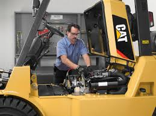

SERVICIOS PRESTADOS
Aires Acondicionados
El acondicionamiento de aire se define según la normativa española1 como el proceso, o procesos,de tratamiento de
aire que modifica sus condiciones para adecuarlas a unas necesidades determinadas. Hay multitud de actividades que
requieren unas condiciones de aire específicas o determinadas como: laboratorios de metrología y calibración, salas
de ordenadores, salas de exposiciones, quirófanos y salas de vigilancia intensiva (UVI), salas blancas en general,
fabricación de dulces, fabricación de textiles, etc. Un sinfín de procesos industriales que precisan unas condiciones
ambientales fijas, que pueden ser muy diferentes de las condiciones de confort, pero determinantes para la manipulación
o la calidad del producto final.
Condensadoras
Emerson Climate Technologies ofrece una línea completa de Unidades Condensadoras para diversas aplicaciones en refrigeración
comercial, como cámaras frigoríficas y equipos refrigerados auto-contenidos. Diversas plataformas de producto permiten seleccionar
la combinación ideal entre el tipo refrigerante, la potencia frigorífica, las temperaturas de aplicación, la tecnología de
compresores y el tipo de componentes, de acuerdo a las especificaciones de cada proyecto.
Montacargas
Tiene dos barras paralelas planas en su parte frontal, llamadas «horquillas» (a veces, coloquialmente también «uñas»),
montadas sobre un soporte unido a un mástil de elevación para la manipulación de las tarimas. Las ruedas traseras son
orientables para facilitar la maniobra de conducción y recoger las tarimas o palés.
Es de uso rudo e industrial, y se utiliza en almacenes y tiendas de autoservicio para transportar tarimas o palés con
mercancías y acomodarlas en estanterías o racks. Aguanta cargas pesadas que ningún grupo de personas podría soportar
por sí misma, y ahorra horas de trabajo pues se traslada un peso considerable de una sola vez en lugar de ir dividiendo
el contenido de las tarimas por partes o secciones. Su uso requiere una cierta capacitación y los gobiernos de distintos
países exigen a los negocios que sus empleados tramiten licencias especiales para su manejo.

Soldadura Industrial
La soldadura es un proceso de fabricación en el que cual se unen dos materiales distintos, normalmente metales. Esto se logra
a través de la coalescencia de varios metales en un cuerpo único, de tal manera que las piezas son soldadas derritiendo los
metales y agregando un material de relleno derretido, el cual posee un punto de fusión menor al de la pieza a soldar.
Los procesos de soldadura aplicados a la industria se realizan en función de cómo los metales de relleno son alimentados en la
soldadura. De esta manera, se consigue un charco de material fundido que, al enfriarse, se convierte en un empalme sólido y fuerte.
Tableros Electricos
Un cuadro de distribución, cuadro eléctrico, centro de carga o tablero de distribución es uno de los componentes principales de
una instalación eléctrica, en él se protegen cada uno de los distintos circuitos en los que se divide la instalación a través de
fusibles, protecciones magnetotérmicas y diferenciales. Al menos existe un cuadro principal por instalación, como ocurre en la
mayoría de las viviendas, y desde éste pueden alimentarse uno o más cuadros secundarios, como ocurre normalmente en instalaciones
industriales y grandes comercios.